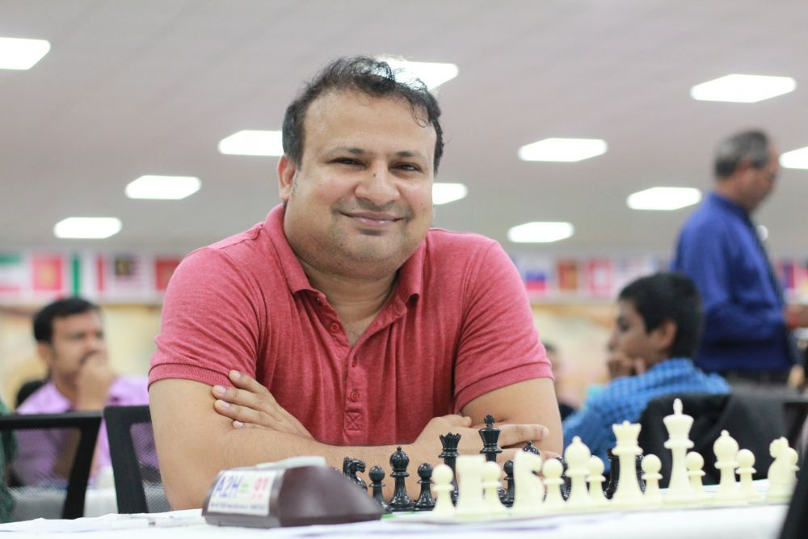

|  | |
The First Sub-Continent GrandMasterPlayers like Rakib, Rajib, Abu Sufian Shakil, Taibur Rahman, Mehdi Hasan Parag, Minhazuddin Ahmed Sagor and a few others emerged. Only four managed to follow in Niaz's footsteps while the rest earned IM or FM titles and have been in limbo since |
GrandMasterA generation of players was inspired in the 90s after Niaz achieved the highest title at the age of 21 in 1987, although Zia and Reefat were already in action |